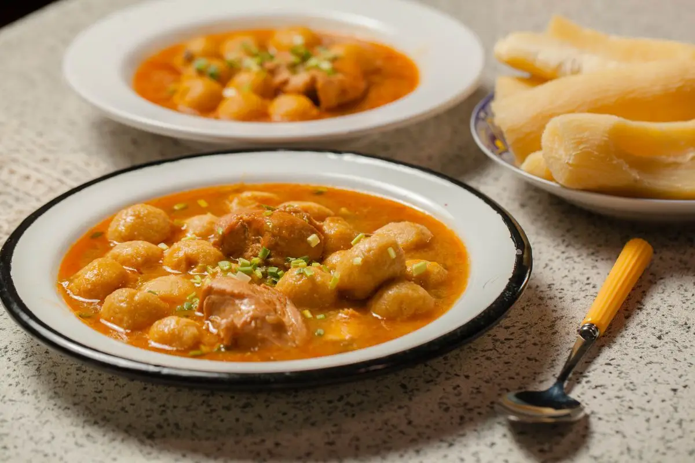
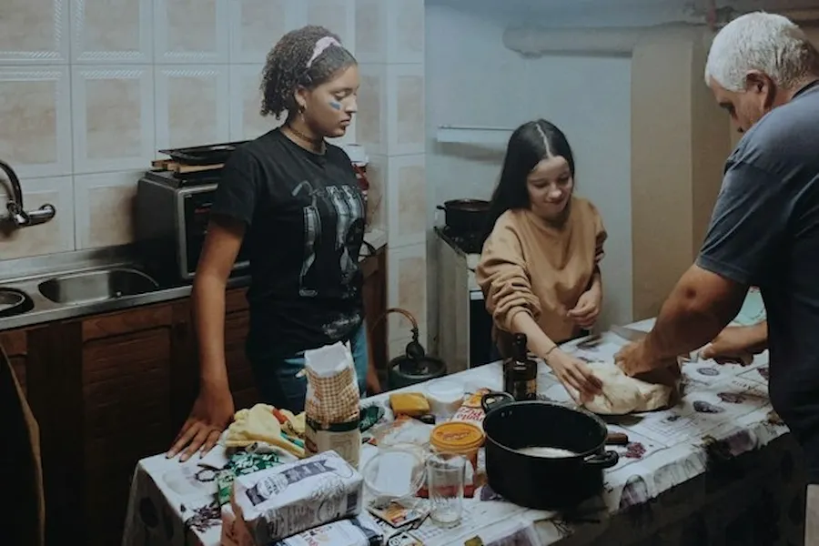

Sabores del Paraguay
See recipesFeatured recipes
About
Sabores del Paraguay is a collection of traditional Paraguayan recipes. Here you can discover dishes from across the country, check how long each one takes and how difficult it is, save your favorites, and suggest your family's recipe to be featured on the site.
